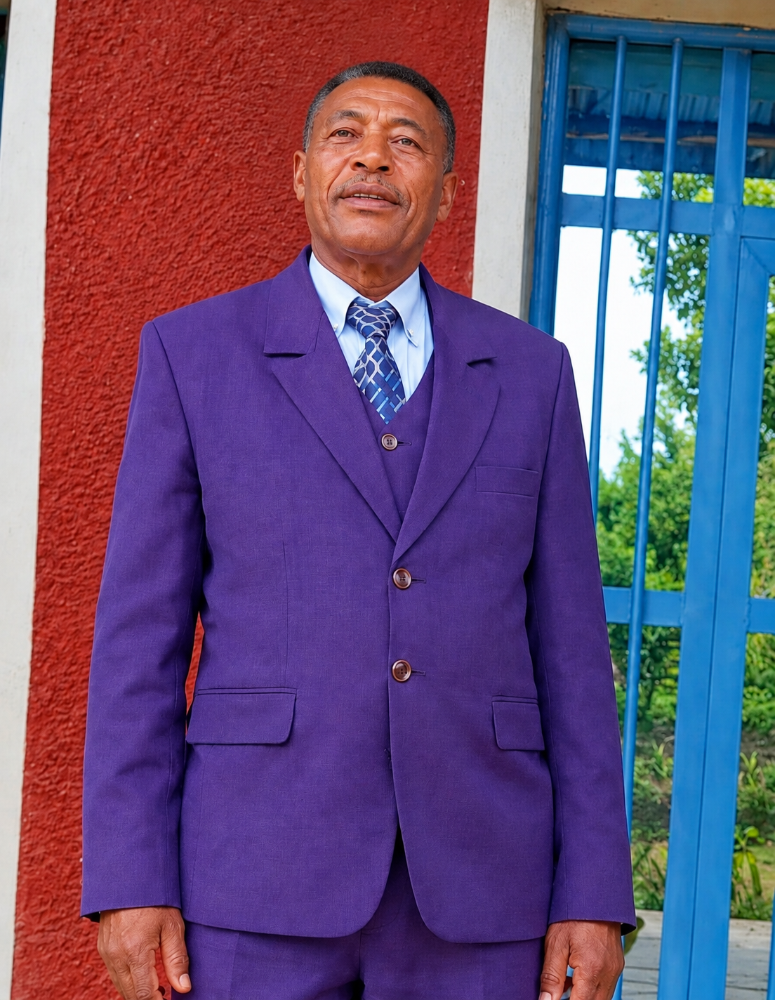

እንኳን ወደ ቤተክርስቲያናችን በደህና መጡ!
እግዚአብሔርን በእምነት፣ በጸሎትና በፍቅር እናገለግላለን። የእግዚአብሔርን ቃል እንማራለን፣ እርስ በርሳችንም እንደጋገፋለን።
የቤተክርስቲያናችን ታሪክ
ነክሪ እናት ቃል ሕይወት ቤተክርስቲያን በ1954 ዓ.ም. የተመሠረተች ሲሆን፣ መጀመሪያ በ8 አባላት ተጀምራለች።
የቤተክርስቲያናችን ዓላማ ወንጌልን ማዳረስ፣ የእግዚአብሔርን ቃል ማስተማር፣ ሰዎችን በእምነት ማጠናከር፣ በጸሎትና በአምልኮ ማገልገል ነው።
በአስቸጋሪ ወቅቶች የምእመናን መበታተን ቢኖርም፣ ጥቂት ታማኝ አገልጋዮች በጸሎትና በተስፋ ጸንተው ቆይተዋል። በ1983 ዓ.ም. እንደገና ተደራጅታ አገልግሎቷን ቀጠለች።
ዛሬም በወንጌል ስብከት፣ በጸሎትና አምልኮ፣ በወጣቶችና በልጆች ትምህርት እንዲሁም በቤተሰብ መንፈሳዊ ድጋፍ እያገለገለች ትገኛለች።
የቤተክርስቲያኑ አገልጋዮች
- አቶ አበራ አላንቼ — ዋና ሰብሳቢ
- አቶ ማቴዎስ መሰና — ጸሐፊ
- ፓስተር ታደሴ ተፈራ — የመንፈሳዊ ዘርፍ ኃላፊ
- አቶ አበራ አደቆ — ወንጌላዊ
- ወጣት ዘነበ አጋንሦ — የወጣቶች ዋና ሰብሳቢ
- ወጣት ኤርምያስ ደምሴ — የወጣቶች ጸሐፊ
- አቶ አባይኔ አበራ — የልጆች አስተባባሪ
የቤተክርስቲያኑ ዋና ሰብሳቢ

አቶ አበራ አላንቼ
🙏 የነክሪ እናት ቃል ሕይወት ቤተክርስቲያን
ሳምንታዊ የአምልኮ፣ የጸሎትና የቃሉ ትምህርት ፕሮግራም
🕊️ እሁድ — አጠቃላይ የአምልኮ ቀን
⏰ ከጠዋቱ 2:00 እስከ 5:00
ሁሉም ምዕመናን በአንድነት የሚሰበሰቡበት፣ እግዚአብሔርን በአምልኮ የሚያከብሩበትና ቃሉን የሚማሩበት ቀን ነው።
📖 ማክሰኞ — የባልቶች Devotion
⏰ ከጠዋቱ 2:00 እስከ 4:00
የባልቶች መንፈሳዊ ሕይወት እንዲጠናከር፣ በጸሎትና በእግዚአብሔር ቃል እንዲያድጉ የሚደረግ ፕሮግራም ነው።
🌸 ዕሮብ — የሴቶች ትብብር የሰፈር ጸሎት
⏰ ከጠዋቱ 1:00 እስከ 2:30
በየሰፈሩ የሚካሄድ የሴቶች የጋራ ጸሎትና የመንፈሳዊ መተባበር ፕሮግራም ነው።
👨👩👦 ሐሙስ — የአባቶች ትብብር የሰፈር ጸሎት
⏰ ከጠዋቱ 1:00 እስከ 2:30
በየሰፈሩ የሚካሄድ የአባቶች የጋራ ጸሎት፣ የመንፈሳዊ ሕብረትና የመተባበር ፕሮግራም ነው።
የከሰዓት ፕሮግራም፦ ከ7:00 እስከ 11:00 — የአምልኮ፣ የጸሎትና የእግዚአብሔር ቃል ትምህርት።
🙏 ዓርብ — የአጠቃላይ ምዕመናን Devotion
⏰ ከጠዋቱ 12:00 እስከ 2:00
የቤተክርስቲያኑ ምዕመናን በጋራ በጸሎት፣ በቃሉ ንባብና በመንፈሳዊ ሕብረት የሚጠናከሩበት ፕሮግራም ነው።
🎶 ቅዳሜ — የተለያዩ መንፈሳዊ ፕሮግራሞች
- የወጣቶች የአምልኮ ቀን
- የመዝሙር ጽናት ቀን
- በየ15 ቀኑ የወጣቶች መደብ ፕሮግራም
- የመንግሥት ሠራተኞች የአምልኮ ቀን
- የነጋዴዎች የአምልኮ ቀን
- ለልጆች የተለያዩ መንፈሳዊ ትምህርቶች
በዚህ ቀን የተለያዩ ክፍሎች በአምልኮ፣ በመዝሙር፣ በጸሎትና በመንፈሳዊ ትምህርት ያድጋሉ።
“በፍቅር እንኑር፤ በቃሉ እንደግፍ።”
“ቃልህ ለእግሬ መብራት፣ ለመንገዴም ብርሃን ነው።” — መዝሙር 119፥105
አድራሻና የመገናኛ መረጃ
📍 ዳውሮ ዞን፣ ማሪ፣ ማንሳ ወረዳ፣ ነክሪ ቀበሌ።
ከነክሪ ቴሌ ኔትወርክ 100 ሜትር ወረድ ብሎ።
Facebook Page YouTube TikTok⚙️ Website አስተዳደር
📋 የማመልከቻ አስተዳደር
📸 ፎቶ ወይም ቪዲዮ ማመልከቻ
የሚፈልጉትን ፎቶ ወይም ቪዲዮ በዚህ ቅጽ ይላኩልን።